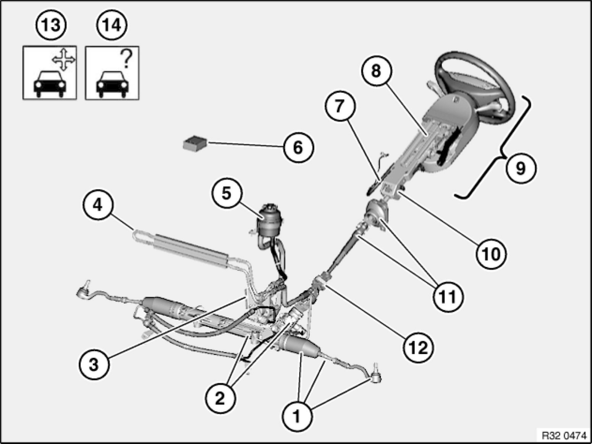
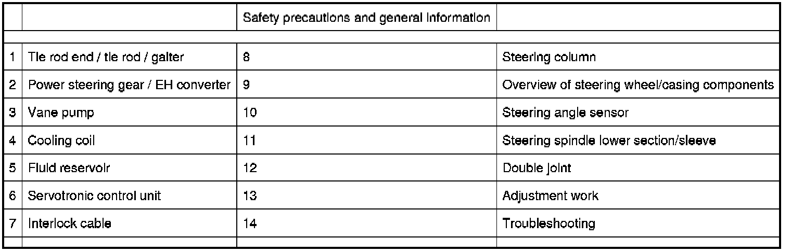

Operation CHARM
: Car repair manuals for everyone.
Home
>>
BMW
>>
2007
>>
X3 3.0si (E83) L6-3.0L (N52K)
>>
Repair and Diagnosis
>>
Steering and Suspension
>>
Sensors and Switches - Steering and Suspension
>>
Sensors and Switches - Steering
>>
Steering Angle Sensor
>>
Locations
Steering Angle Sensor: Locations
32 ... . - Overview of steering

